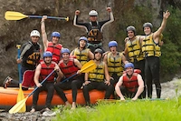

Driven by our motto, "Unleash your wild side, one rapid at a time," our purpose is to connect people with the beauty of nature and the excitement of whitewater rafting. Our mission is to provide safe, exciting, and unforgettable rafting experiences for people of all skill levels. We believe in putting safety first, protecting the environment, and creating lasting memories through shared adventures. Our experienced guides are dedicated to making every rafting trip enjoyable and memorable.